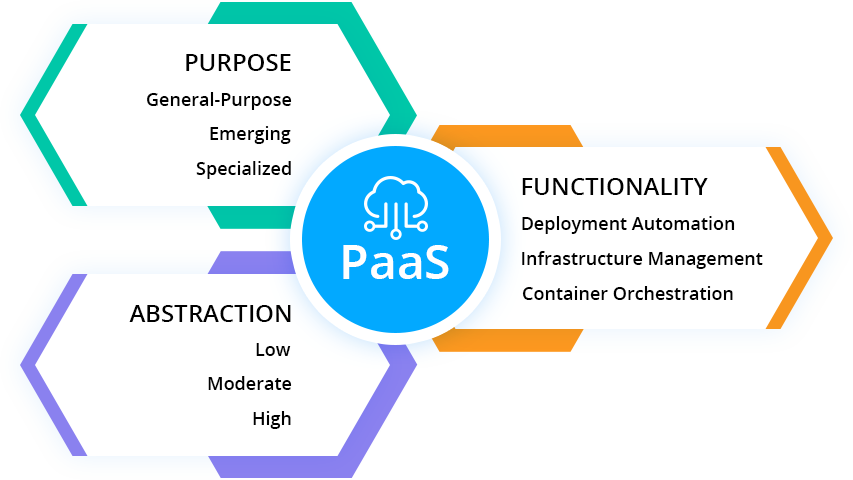

本文译自 什么是 PaaS？ PaaS 类型介绍。
译者：helight。
原文地址：https://jelastic.com/blog/what-is-paas-platform-as-a-service-types-explained/
前言
这篇文章是对 PaaS 的划分介绍，没有从基础介绍开始，这里默认大家就是知道什么是 PaaS，PaaS 要解决什么问题的。
这里的分层对具体的 PaaS 建设我认为有比较好的指导意义，至少明白没有万能的 PaaS，只有适合业务场景的 PaaS。
那么大概有哪些类别的 PaaS？你的业务场景需要建设怎样的 PaaS 才能对业务有帮助？抽象到那一层是比较合适的？
一起来看看。
介绍
没有说一个 PaaS 可以适合所有人的。现在甚至云计算服务模型的定义也是相当模糊的。 一般情况下，它被描述为一种云托管平台，这个平台上具有一组部署服务并能自动扩展，有应用程序管理和 DevOps 工具，可以在共享基础设施或内部设施。同时，PaaS 屏蔽了构建和维护基础设施的复杂性。 让我们看看 PaaS 在其用例和支持的技术方面有何不同，以及如何确定哪种将满足特定的需求。
让我们从多个角度进一步研究和分析 PaaS 解决方案：
- PaaS 的目标
- PaaS 抽象能力
- PaaS 功能

目标驱动的 PaaS 分类
今天的 PaaS 供应商通过提供专门为特定服务构建的各种工具，在云上为应用程序开发及其托管提供了创新实现。考虑到 PaaS 解决方案中托管的用例，我们可以将 PaaS 产品分为三大类：
- 通用型 PaaS
- 新兴 PaaS
- 专用 PaaS
通用的平台被广泛选择用于传统的有状态 Web 和分层应用程序，从而为迁移现有工作负载提供了“提升和转变”的方法。 此外，这种 PaaS 类型会随着现代技术而及时扩展，以满足无状态云原生应用程序和微服务的需求，并有助于开发新的可扩展和容错服务。
新兴的 PaaS 为市场带来了新的实现。它们通常使用在开发基于新兴技术（例如无服务器，分布式事件处理，机器学习框架等等）的独立服务。
专业平台专注于较小的一些应用场景，但市场需求很高。实时证明此类产品在不同方向领域上都非常有价值，包括电子商务，大数据处理和商业应用等场景。 通常，这些平台会转变为 PaaS 的子类别，例如 CMSaaS，电子商务即服务，DBaaS，BPaS等等。
PaaS 的抽象级别
PaaS 解决方案越来越关注于应用程序部署和交付过程的全周期自动化。这有助于开发人员将更多的精力放在应用程序设计及其实现上，而不是耗时的例行任务或复杂的任务，例如服务器和存储配置，应用程序和基础设施的安全性，自动扩展，负载平衡等等。
PaaS 的抽象级别可以分为 3 中：低，中和高。
低抽象级别的平台，尤其是容器即服务（CaaS）解决方案，为 DevOps 团队提供了对基础设施配置的底层访问，以及对容器和各种平台服务的精细控制（例如服务发现，日志记录，安全性和负载平衡）。
中间抽象的主要目的是使开发人员编码时无需担心基础设施的配置和管理。这些平台让开发人员可以访问从 CaaS 和 IaaS 部署属性中完全抽象出来的各种可集成和优化过的开发框架，中间件软件堆栈，API 和服务。此类 PaaS 解决方案通常提供开箱即用的自动扩展 ，负载平衡，高可用性，备份，灾难恢复，CI/CD 和其他应用程序生命周期管理功能。
高度抽象的解决方案目标是对甚至编码过程进行抽象，以提高应用程序交付速度并降低创新成本。在这种情况下，开发人员可以获得整个技术堆栈，但具有应用程序，平台和基础设施级别的完整抽象。它有助于提高团队成员的绩效并降低其技术技能的要求。
集成到 PaaS 的功能和服务
为了使应用程序生命周期管理过程自动化，PaaS 代表了一系列配置工具，持续集成和交付服务，流行的 IDE 的连接器和插件。 我们可以重点介绍这一类别中的三种主要方法：
部署自动化
PaaS 专注于为自动化部署提供工具和服务，提供 “一键式” 或 “git-push” 的功能，以及用于代码构建，持续集成和项目管理工具的预配置环境。
基础设施管理
云平台聚焦于基础设施配置，健康和可用性监视，安全和性能检查，成本优化，以及提供与升级和维护相关的自动化和服务。
容器编排
容器管理平台提供的功能可以解决容器化过程的挑战，以及对现有或新应用程序进行云原生化的挑战。 现在，许多 PaaS 供应商都将 CaaS 作为其产品的组成部分，从而进一步增强了 PaaS 作为各种 DevOps 工具集合的观点。
如何选择 PaaS
在为公司选择 PaaS 之前，要考虑几个要点。
-
最重要的是要分析所选的 PaaS 是否支持目前开发团队使用或计划在未来使用的技术，中间件堆栈和编程语言。
-
接下来要考虑的是供应商和数据绑定。 尽管有一些 PaaS 提供了好处，但是由于平台上的工具和服务的专有设计，对应用程序本身和使用的中间件堆栈的访问可能非常有限。这会影响应用程序的可移植性。因此，迁移到任何其他云或实现多云互操作性方法成为一个非常大的挑战。同样的问题也适用于存储的数据。 确保 PaaS 提供者允许轻松导入/导出数据，没有任何绑定。
没有适用于所有项目的“一刀切”的技术，但是在现代云世界中，所有可用的集成和互连功能使特定产品之间的界限变得模糊。当涉及到云服务，DevOps 工具和容器管理系统时，Jelastic 多云 PaaS 提供了所需的选择自由。尝试以最小的投资来极大地提高开发生产力和应用程序交付过程。
后记
Jelastic 这家公司是专门做 PaaS，SaaS 解决方案的，看了官网还是很专业的，但是没有体验具体产品。这篇文章是他们 PaaS 产品总监的总结，整体方向上是 OK 的。
我更关注的是他提到的 PaaS 抽象级别的划分和应用场景划分。这部分总结的还是挺好，就目前我的认识上来说，对我目前架构内部的 PaaS 平台是有指导意义的。
关注「黑光技术」，关注大数据+微服务